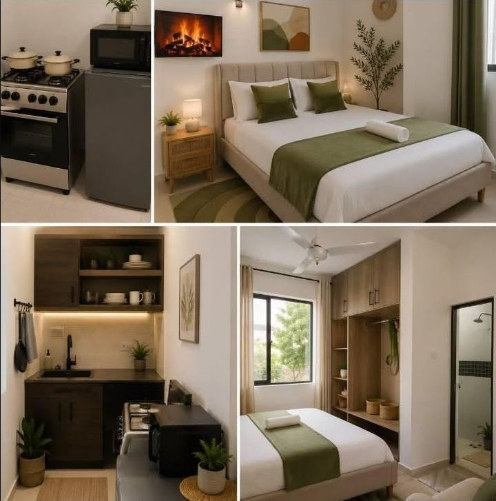

Thoughtfully
furnished
Comfortable spaces designed to feel easy from the moment you arrive.
Nakuru, Kenya Stay your way
Thoughtfully furnished stays for slow mornings, quick escapes and everything in between.
Discover the stay ↘A better kind of short stay
Signature Stays Kenya brings the ease of a hotel and the warmth of a home together. Whether you are in town for business, leisure, or a little space to reset, arrive to a stay that is already thought through.

Featured stay 01
Clean lines, warm wood, a calm sleeping space and everything needed to settle in. Ideal for a solo reset, a work trip or a relaxed city break.
The Signature standard
Small details. Better stays.
Comfortable spaces designed to feel easy from the moment you arrive.
Stay for work, switch off for the weekend, or make a proper little escape of it.
Kenyan hospitality with a distinctly personal, unfussy point of view.
Ready when you are
For availability, rates or a tailored stay, send Signature Stays Kenya a message directly.
Message on Facebook ↗